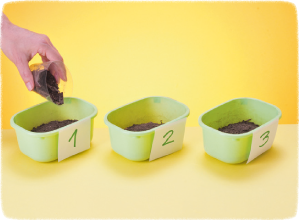
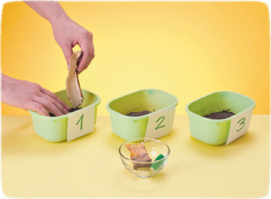
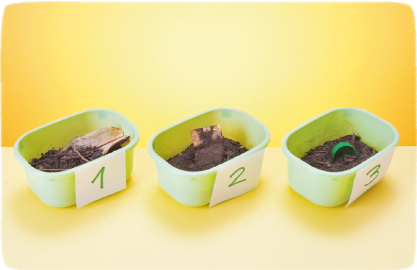

3
Realizamos la siguiente actividad
experimental para poner a prueba la predicción.
Paso 1

Paso 2

Ubicar
los recipientes en
un lugar al aire libre y a la
sombra durante 20 días.
Cada 4 días observen los
cambios que presenten los
desechos.
Paso 3

4
Registramos las observaciones cada 4
días en la tabla que se nos entregará.
ABP © SM
23